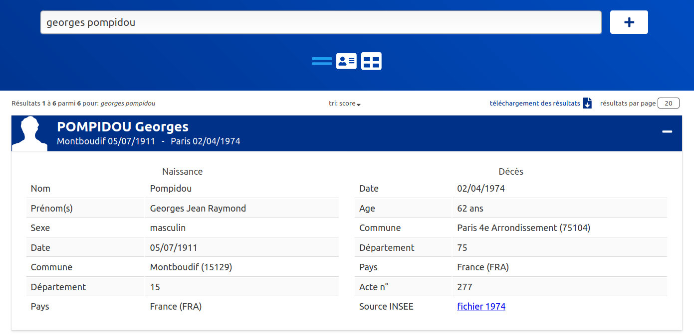

### dev.js, dataops & devops <img height="100" style="border : 0;box-shadow: none;" data-src="img/matchID-logo.svg" alt="matchID"> les prétextes et la génèse de [deces.matchid.io](https://deces.matchid.io) <small>fabien.antoine@m4x.org</small>
## L'objectif Publier un moteur de recherche des décès 
## L'opportunité <div class="container center"> <div class="col"> début 2017...<br/> <br/> <small>au "MI", le projet matchID réalise en POC un moteur de recherche des décès avec le fichier INSEE, alors fermé</small> </div> <div class="col"> ... fin 2019<br/> <img height="150px" style="border : 0;box-shadow: none;" data-src="img/logo_insee.svg" alt="logo Insee"> <br/> <small>l'INSEE publie l'ensemble des 25 millions d'enregistrements de décès depuis 1970 <a href="https://www.data.gouv.fr/fr/datasets/fichier-des-personnes-decedees/)">data.gouv</a></small> </div> </div>
## Les envies - valoriser l'effort d'ouverture de l'INSEE - capitaliser sur l'expérience du ministère - offrir un service minimal gratuit - découvrir d'autres framework .js - évaluer plusieurs IaaS de la French Tech
## Data sources <ul> <li>source INSEE</li> <li>catalogue et APIs data.gouv</li> <li>stocackge objet S3</li> </ul>
## La source INSEE <small> <ul> <li>nom, pr√©nom(s)</li> <li>date/lieu de naissance/d√©c√®s</li> <li>n¬∞ d'acte de d√©c√®s</li> <br/> <li>25 millions d'enregistrements</li> <li>49 fichiers, 730Mo compress√©</li> <li>environ 620k d√©c√®s/an aujourd'hui</li> <br/> <li><i>fixed width file</i> (champs fixes) </li> <li><i>~ascii (sauf quelques lignes...) </li> </ul> </small> <small><pre><code> DUCRET*MARIE ANTOINETTE/ 21922010901004AMBERIEU-EN-BUGEY 19701210014216 GRANGEON*ERIC JEAN REMY/ 11969032901004AMBERIEU-EN-BUGEY 19700425693831059 VELLET*PHILIPPE/ 11970020101004AMBERIEU-EN-BUGEY 197002030100412 PRESSAVIN*LYDIE/ 21970040601004AMBERIEU-EN-BUGEY 197004060100433 DOUAT*MARIE-SYLVIA MARTINE/ 21970070801004AMBERIEU-EN-BUGEY 1970070801053457 </code></pre></small> ü§Æ ü§Æ ü§Æ <small><small>(merci quand m√™me √† l'INSEE : c'est bien moche mais tr√®s carr√© - et pr√©cieux !)</small></small>
## Le catalogue [DATA.GOUV](https://www.data.gouv.fr/fr/datasets/fichier-des-personnes-decedees) <div class="container center"> <div class="col"> <small> data.gouv c'est une plateforme de publication de données ouvertes - en quelques chiffres : </small><br/> <br/> </div> <div class="col"> <small>on y retrouve les 49 fichiers INSEE, faciles d'accès, et quelques réutilisations</small> <a href="https://www.data.gouv.fr/fr/datasets/fichier-des-personnes-decedees"> </a> </div> </div>
## [L'API data.gouv](https://doc.data.gouv.fr/api/reference/#/) <div class="container"> <div class="col left"> <small> <p> Télécharger 49 fichier à la main, c'est simple mais peu réaliste pour des opérations récurrentes. </p> <p> Heureusement, l'API de data.gouv existe, très lisible et documentée en Swagger via FlaskRestPlus :<br/> <small><a href="https://doc.data.gouv.fr/api/reference/#/"><code> https://doc.data.gouv.fr/api/reference/#/</code></a></small> </p> <p> Le endpoint pour notre dataset est : <br> <small> <a href="https://www.data.gouv.fr/api/1/datasets/fichier-des-personnes-decedees"> <code "is-small">https://www.data.gouv.fr/api/1/datasets/fichier-des-personnes-decedees</code> </a> </small> </p> <p> Le schéma du JSON est épais, le chemin qui nous intéresse est <code>resources.url</code>. </p> </small> </div> <div class="col left"> <small> <p> Pour récupérer les 49 fichiers en shell et les compresser : </p> <small><code> curl -s https://www.data.gouv.fr/api/1/datasets/fichier-des-personnes-decedees/ | jq '.resources[].url' | sed 's/^/curl -s /;s:/\(deces-.*\)":/\1" | gzip > \1.gz:' | sh </code></small> <p> N'hésitez pas à décomposer la commande pour les curieux </p> <p> Vous noterez l'utilisation de <a href="https://stedolan.github.io/jq/"><code>jq</code></a>. Cet outil est devenu incontournable à l'ère des API, pour ceux qui font encore du shell. </p> <p> Pour les habitués de langage plus évolués Python ou Node, la récupération ne sort pas des habitudes. </p> </small> </div>